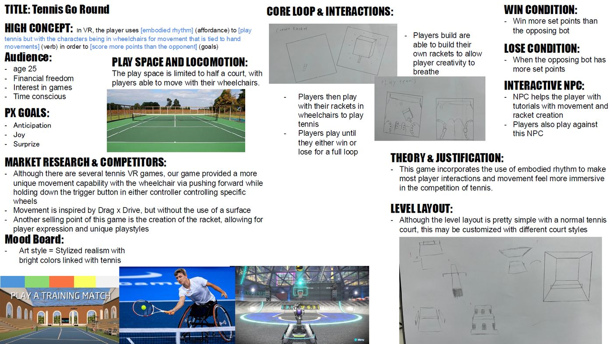
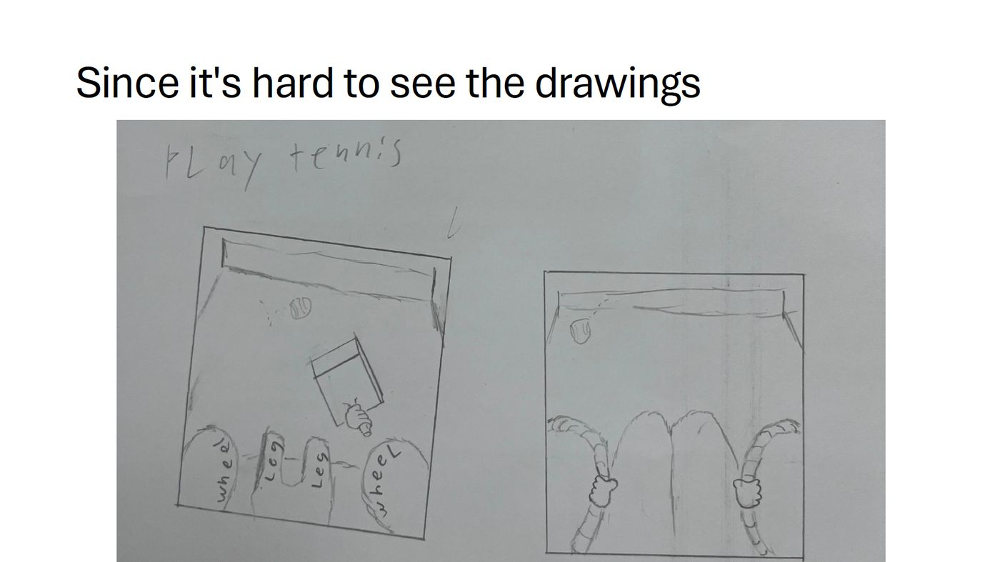
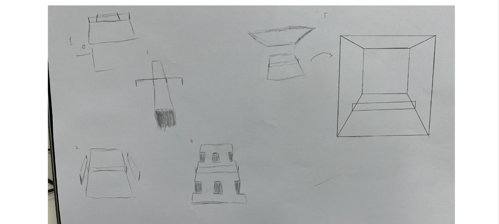

Everyone please put in your one page GDD so we can expand ideas more as well as understand each other's wants/desired for their games.
Team One-Pagers (Week 4)
Each team member pitched their own one-page GDD in Week 4. Teammate Kain Tazumi's pitch, “Tennis Go Round,” proposed a seated VR arcade tennis experience where players control a wheelchair with their hands to move, aim, and strike the ball. The team selected this concept to develop together — it became the seed of the project, well before it evolved into the final sci-fi arena prototype.


Supervisor Feedback (Week 5)

Thanks for the one pager. Here are some thoughts.
What I like...
- Clear hook and novelty — seated VR tennis with hand-driven wheelchair control is distinctive and easy to pitch.
- VR fit is good — embodied rhythm (push, reposition, swing) can be very satisfying if tuned well.
- Contained environment helps — a small enclosed court reduces navigation complexity and keeps play readable.
- NPC role is ok — tutorial and opponent is a practical way to make it playable without multiplayer.
However, I have some concerns and questions...
-
Movement and striking at the same time is the main risk. Players will need to push wheels and swing a racket. That is a lot of coordination and could feel tiring or awkward, especially for novices. Decide how you separate these actions: Do players push to reposition, then release and swing? Does the chair coast for a short time after pushing? Do you provide auto-centering or assisted positioning?
Suggestion:
1. Push chair to reposition but the ball stays at a spot where the player can roll the chair towards it and smash it.
2. The player is in a more ‘air hockey style’ gameplay where bounces don't count and only ‘goals’ count as points.
3. Provide the player assisted positioning to shift them towards the ball faster to catch the smash. -
Hand-propel movement can be physically demanding and may exclude some players. Perhaps include at least one alternative control mode: “Assisted movement” (small joystick or auto-drift to target spots), or “One-hand mode” for movement.
Suggestion: one hand mode for movement, using the left joystick to navigate left and right but still having to do the “push wheelchair” action to navigate and look for the ball.
-
Difficulty options that slow the game down. Ball physics, bounce, spin, and AI that returns reliably are non-trivial. If this is too realistic, it will become hard to ship. Perhaps go arcade first: predictable ball trajectories, simple bounce rules, forgiving hit detection, and AI that returns to fixed zones rather than perfect tracking.
-
Importantly — this is a real sport with real athletes. Make sure the game is not using the chair as a “gimmick” and that the framing is positive and competent. Keep the tone focused on skill, flow, and sports excitement, not the novelty of disability.
Questions for the team to discuss:
- What is your movement model? How exactly does the player propel the chair — continuous push, or push to accelerate and coast? How do you stop? (Team answer: hold and push the wheels to move — push only the right wheel to turn left, only the left wheel to turn right, push both to move forward.)
- How does the player aim a hit? Is it racket direction, timing, a target reticle, or assisted aiming?
- What is the “fun skill” you are training — precise timing, positioning, or anticipating bounces? Choose one as the main satisfaction source.
- What is your MVP match format — first to 5 points, timed rally mode, or best of 3? Keep it short for playtesting.
- How will you prevent fatigue and frustration? What comfort options exist and what is the default?
- What does the NPC do in the first 60 seconds? What is the tutorial flow: move, aim, first successful hit, first point?
This feedback directly shaped the pivot documented in the final GDD: wheelchair locomotion was replaced with joystick/teleport movement, and the tone shifted from a wheelchair-tennis simulation to a sci-fi racket-sport arena — while keeping the embodied movement-and-swing core the feedback praised.